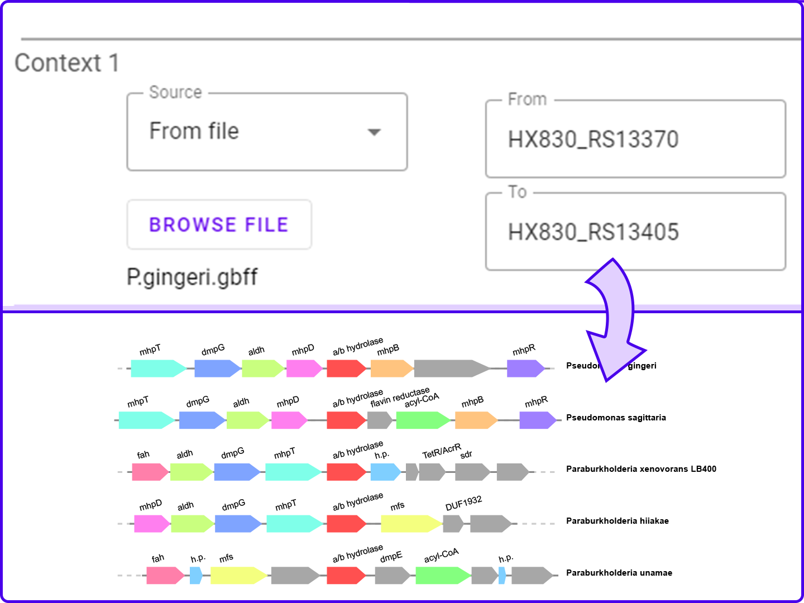
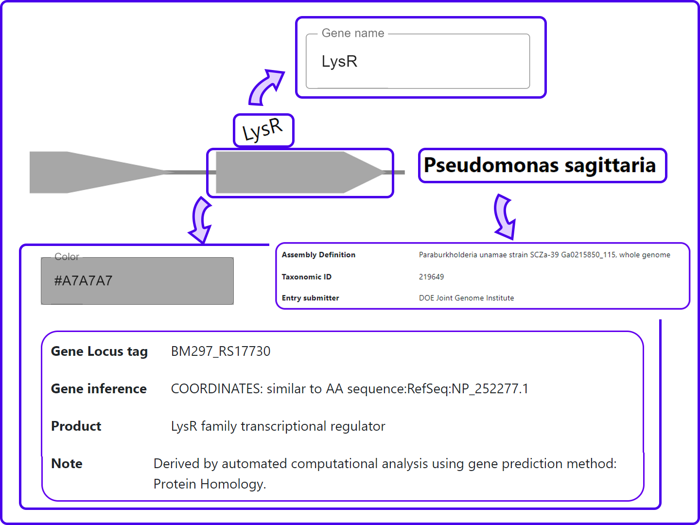

Introduction
This app allows you to generate a genomic context diagram. You can use any genome assembly from GenBank and even use your own .gbff files.
We'll only store the data we need for drawing, and we will delete it afterwards.
You may do a BLAST search for homologous genes, and we'll draw the results in their respective contexts.
See all about the genes, edit your drawing colors, shapes, and show the information you want to show.
Click on the genes, their tags or the assembly's tags to see more about them and edit them.
BLAST
BLAST finds regions of similarity between biological sequences. The program compares nucleotide or protein sequences to sequence databases and calculates the statistical significance. We are using NCBI's implementation of protein BLAST
Specifying your query
To run a BLAST search, you need to specify a protein sequence to search. This is your query. There are many ways you can do this:
- FASTA sequence: You may directly write down the protein FASTA sequence of your interest. For example, "MKFTRVCDRR DVPEGEALKV ESGGTSVAIFNV DGELFATQDRC THGDWSLSDGG YLEGDVVECSL HMGKFCVRTGK VKSPPPCEALKI FPIRIEDNDVLV DFEAGYLAP"
- .gbff file: You may upload a GenBank flat file, containing a whole assembly. You must specify, by locus tag, which specific sequence you wish to use for the search. In this case, the uploaded .gbff will be drawn together with the search results.
- Assembly accession: Similar to uploading the file, but with this option you only specify the assembly accession number, so we get the data from GenBank. An assembly accession should always begin with "GCF" or "GCA". For example, "GCF_000013645.1"
Search customization
There are many options to customize your search and filter your results.
In first place, you can choose how many contexts you wish to be drawn. If you specify, for example "best 15 matches", out of BLAST results, the 15 with best expect value will be drawn.
If used together with "one of each" or "include only", using high numbers may slow down the process.
You may specify the database to use for the search. This means the program will show you the best matches from all the genes in that particular database.
"One of each" limits the results to not have two (nor more) of the specified taxonomic group. That is, if you say "One of each class", and the best match is from a Paraburkholderia xenovorans assembly (Betaproteobacteria class), and the second best match is from a Pseudoxanthomonas spadix assembly (Betaproteobacteria class), it will show only the Xenovorans' gene context.
"Include only" limits the results to a certain taxonomic group. That is, if you say "Include only Xanthomonadales", and the best match is from a Paraburkholderia xenovorans (Burkholderiales) assembly, it won't be shown.
Both "Minimum identity" and "Minimum coverage" limit the results. If these number are too high, it is possible to have less results drawn that the number specified in "Best X matches".
Once you set all these options, you may click the "Draw it!" button. It may take a few minutes or even a few hours to process your request, but after that you will see the diagram and you'll be able to edit it.
My contexts
Use "Draw my contexts" if you know exactly what you want to draw.
Diagram edit
You may click on the different elements of the diagram to see more information about them or edit them.
Click on the gene tag to change the text or font size.
Click on the gene itself (the arrow) to change the color, shape, border width or put that gene in the center of the image.
Click on the assembly tag to change the text or font size. You'll also see general data aboout the assembly.
When you're ready with your diagram, click on the "Download" button to download the diagram as a .svg image file.